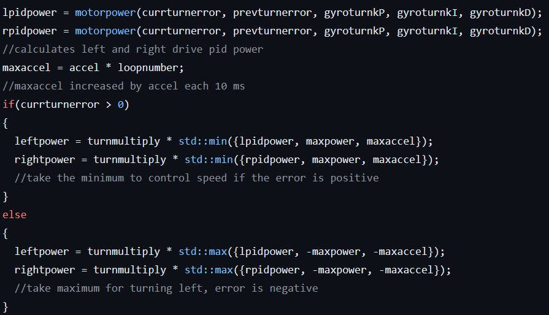
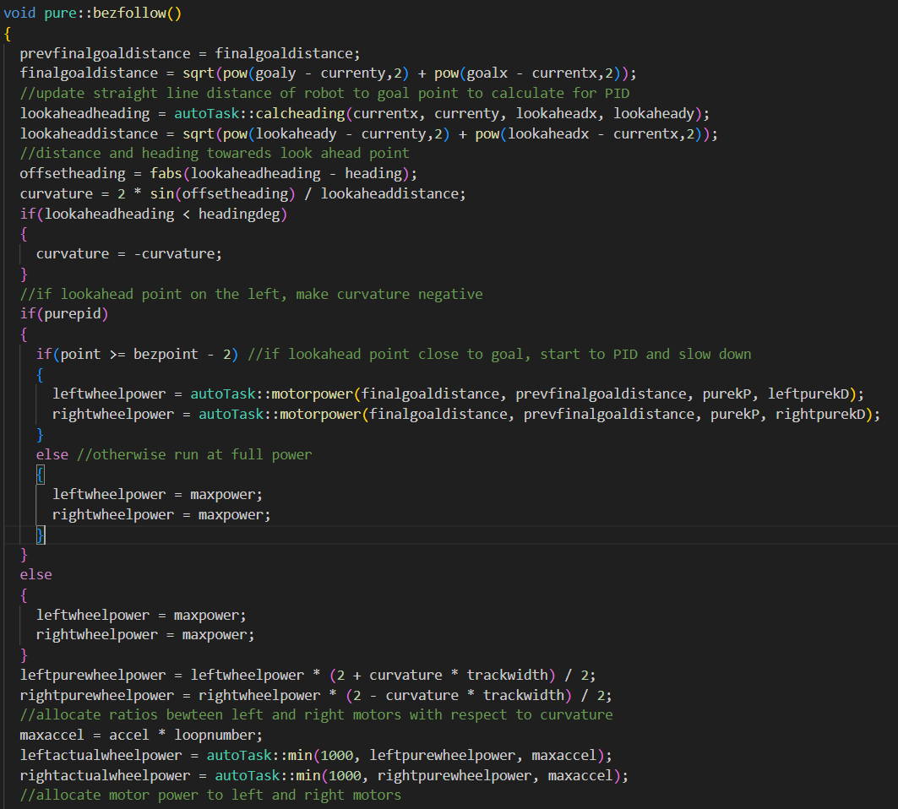

Vincent Chung
My VEX Robotics Experience
Link to Github Repository of my code:
Robotics
Being in VEX Robotics for the entirety of my time in high school, I have developed a variety of skills regarding teamwork and programming, as well as achieved a high level of competitiveness.
-
Some achievements include:
- World Qualifications in my junior and senior years (Tipping point and Spin Up)
- Provincial Finalist in my senior year
- Multiple awards including the Amaze and Judges Awards
- Peaked at Top 50 in the world for skills
Throughout the development of my code, I have mainly improved on the autonomous code of the robot.
-
Some algorithms and techniques that I have used include:
- PID (Proportional-Integral-Derivative) Controller It is an error feedback mechanism, that takes in the errors between predicted movement and actual movement and adjust the motor powers based on calculations and PID constant tuning. This allowed accurate movements of the robot in each autonomous run. Through this implementation, I have learnt rigorous testing of the robot and its movements. This allows me to develop a skill to pay attention to the details of my code to ensure that the robot moves accordingly and accurately every autonomous run.
- Gradual acceleration This ensures that the robot does not drift or tip when I start the PID movement. This is regulated using the "maxaccel" variable.
- Voltage Control Instead of using rpm control, I used voltage to ensure that the motors do not overheat while ensuring the accuracy of power control of the motors.
- Position Tracking Algorithm By using two prependicularly placed unpowered tracking wheels on the robot, as well as an inertial sensor that acts as a gyro for heading detection, I am able to use calculus and trigonometry to determine the approximate position of the robot on the playing field. This allows coordinate-based coding of the robot, which I can then use coordinates of the objects on the playing field to code the robot. Even if the robot is a couple of inches off its expected position due to environmental factors, it can still correct itself during the autonomous run.
- Pure Pursuit For this algorithm, I mainly referenced it from team 1712 from FRC. It is an algorithm that allows the robot to follow a pre-generated curve on the playing field. It mainly plots some lookahead points on the path for the robot to follow, and the more points are plotted, the better the robot follows the path. Through some online searching and researching, I implemented a quadratic and cubic Bézier curve for the path generation. This allows me to dodge obstacles on the straight line between two points that I want to direct the robot to drive to. The main method of achieving this is to carefully adjust the difference between left and right chassis drive power to achieve the curvature of the robot movement desired. Code for path following algorithm is as follows:
In addition to the readily available code on the internet, I have several additions to the code:

This code is taken from my turn PID function, with the forward/backward PID function working similarly.
-
Some additions included:
I have taken some reference from this document: 5225A Odometry
and alongside some of my math:


